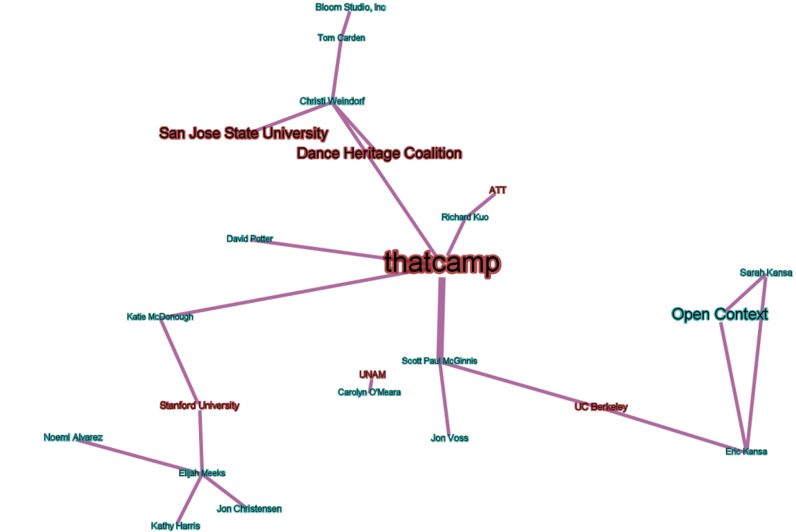

This network was built from the Google Spreadsheet edge list built during the Gephi Workshop at THATCampSF.
Along with my hopefully-not-too-rambling explanation of the ins and outs of Gephi, we built the above network by creating a simple edge list using Google Docs and imported it into Gephi using Import Spreadsheet in the Data Laboratory.